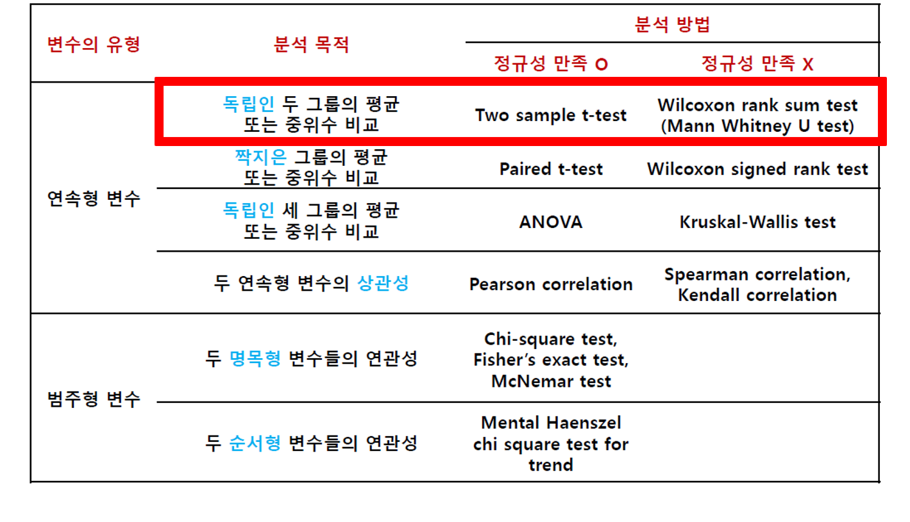
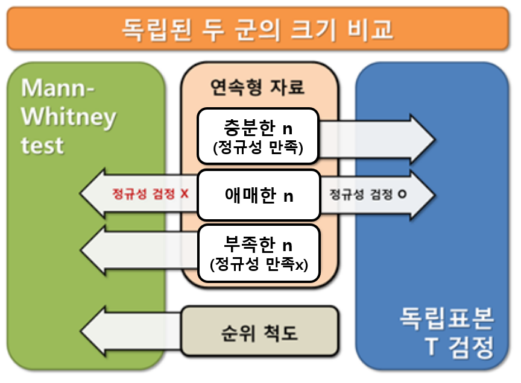
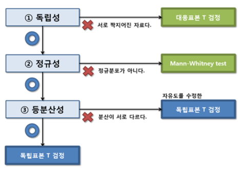
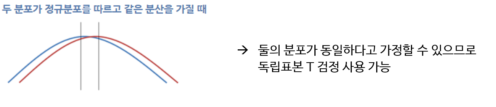
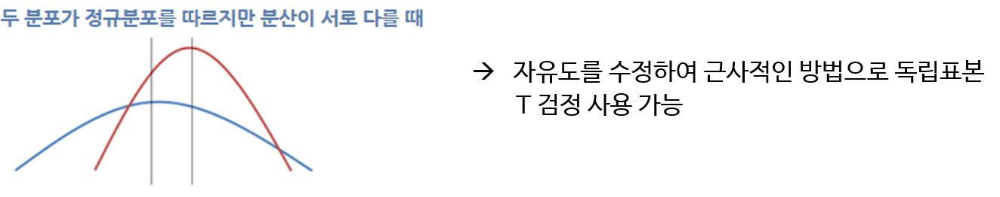
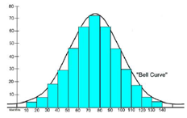
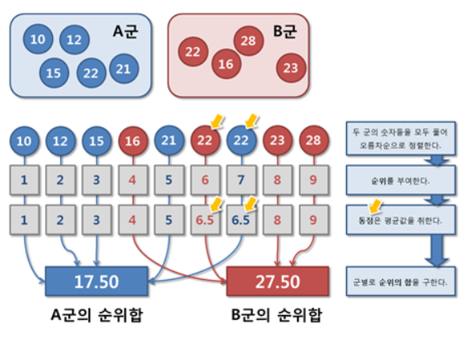
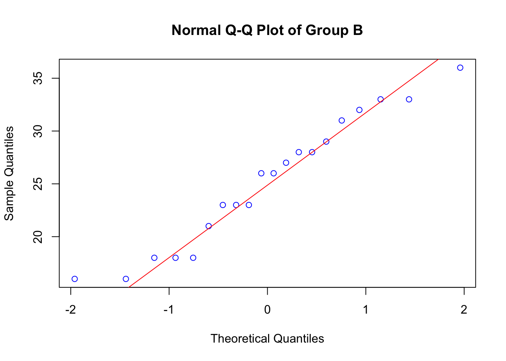

Chapter 2 두 군의 크기 비교
- 자료 유형에 따른 분석 방향

- 결과변수가 연속형인 독립된 두 군의 크기를 비교할 때 독립표본 T 검정과 Mann-Whitney test 사용

2.1 독립표본 T 검정
독립표본 T 검정 = Student’s t-test (∵ Student’s t-분포 사용)
실험군과 대조군의 치료 효과를 비교하거나, 두 군사이의 측정치의 크기를 비교하는데 널리 사용됨
[독립표본 T 검정을 사용하기 위한 3가지 가정]
- 독립성
- 정규성
- 등분산성
[독립표본 T 검정의 귀무가설과 대립가설]
- 귀무가설: 두 군의 평균은 같다
- 대립가설: 두 군의 평균은 같지 않다




2.1.1 정규성 검정
정규성 가정은 독립표본 T 검정이 작동하는 매우 중요한 가정임
[정규성 검정의 귀무가설과 대립가설]
- 귀무가설: 자료는 정규분포를 따른다
- 대립가설: 자료는 정규분포를 따르지 않는다
정규성 검정에서 p-value가 0.05 이상일 때 귀무가설이 채택되어 정규분포를 따른다고 간주함
- 귀무가설을 기각하지 못하는 것이 꼭 귀무가설이 옳음을 의미하는 것은 아니므로 ’정규분포를 따르지 않는다고 말할 충분한 근거가 없다＇라고 해석
-
- 적어도 자료의 개수가 10개 이상이어야 이 검정에 의미를 부여할 수 있음
- 히스토그램, QQ plot을 통해 자료의 분포가 정규분포와 유사한지 확인 가능
- 통계적 방법으로는 Kolmogorov-Smirnov(KS) test 와 Shapiro-Wilk test 등
- (n > 2000 일 때는 KS test, n<2000 일 때, Shapiro-Wilk test를 쓰는 경우가 많음)

- Q-Q도표(quantile-quantile plot)
- 특정 분포에서의 이론적인 분위수(정규 기대값)와 실제 분위수(관측값)을 각각 y 축과, x 축으로 표현한 것
- 표본의 정보에 기초한 분포가 가정된 분포와 얼마나 일치하는지를 보여 줌
- 관측값(x)과 정규 기대값(y)으로 표현된 점들이 확률도상에서 직선에 일치할수록 자료는 정규분포에 가깝다고 해석

2.2 Mann-Whitney test
정규분포를 따른다고 가정할 수 없는 두 군은 평균을 통해 크기의 차이를 비교할 수 없음. 따라서 모집단의 분포를 가정하지 않는 비모수적 방법 이용
독립된 두 군의 크기를 비교하는 비모수적 방법: Mann-Whitney test와 Wilcoxon rank sum test (순위의 합을 기본으로 하는 검정법. 검정통계량 산출법은 조금 다르지만 동일한 검정결과 보여줌)
[순위합 검정]
- 두 군의 자료를 혼합하여 크기 순으로 정렬하여 순위를 부여한 뒤, 그 순위의 합을 군별로 구하여 두 군의 순위합의 크기가 통계적으로 차이가 있는지 검정하는 방법
- 순위 척도도 연속형 변수는 아니지만 순위 정보가 있으므로 순위합 검정으로 크기 비교 가능
장점: 정규분포에 대한 가정을 하지 않으므로 크기 순서가 있는 어떤 상황에서 적용 가능
단점: 일반적으로 독립표본 T검정에 비해 검정력이 낮으며, 두 군의 크기의 차이(평균 차이)를 언급할 수 없음
[순위합 검정의 가설 설정]
- 귀무가설: 두 군의 크기가 같다
- 대립가설: 두 군의 크기가 같지 않다
- [검정 순서]
- 두 표본을 하나의 표본으로 통합
- 자료를 크기 순으로 정렬
- 자료에 순위를 부여
- 같은 크기의 자료는 순위의 평균으로 공동순위
- 순위화된 자료를 원래 속한 표본으로 되돌림
- 각 군에서 순위 합을 계산

2.3 R 예제
새로운 항우울제의 치료 효과를 증명하기 위해 40명의 우울증 환자를 군당 20명씩 실험군과 대조군으로 무작위 배정하여 실험군에게는 항우울제를, 대조군에게는 위약을 투여하였다. 1개월의 치료 뒤 측정한 우울증 점수를 통해 두 군의 치료 효과의 크기를 비교하고자 한다. 두 군 사이에 우울증 점수의 차이가 있는지 검정하라
2.3.1 t-test
2.3.1.1 자료입력
#1_normality.csv 파일 선택
#file.choose()를 이용하면 윈도우 탐색기창을 통해 쉽게 파일을 선택 가능
#header=T는 첫번째 줄이 변수 이름으로 되어 있다는 뜻
depressiondata = read.csv(file="data/1_normality.csv",header=T) #자료 확인
#View(depressiondata) #attach()함수는 데이터셋을 메모리로 로딩해서 변수 이름만으로 분석이 가능하게 해주는 함수.
#데이터셋을 계속 메모리에 로딩해두면 메모리용량에 문제가 생기므로 분석이 끝나면 detach()함수를 통해 제거해준다
attach(depressiondata)2.3.1.2 탐색적 자료분석
#summary(): 데이터 각 변수들에 대하여 다섯 수치(minimum, first quartile, median, third quartile, maximum) 요약을 출력
summary(depressiondata)## no group score
## Min. : 1.00 Min. :1.0 Min. :10.00
## 1st Qu.:10.75 1st Qu.:1.0 1st Qu.:17.50
## Median :20.50 Median :1.5 Median :23.00
## Mean :20.50 Mean :1.5 Mean :22.75
## 3rd Qu.:30.25 3rd Qu.:2.0 3rd Qu.:27.25
## Max. :40.00 Max. :2.0 Max. :36.00by(depressiondata, group, summary)## group: 1
## no group score
## Min. : 1.00 Min. :1 Min. :10.00
## 1st Qu.: 5.75 1st Qu.:1 1st Qu.:15.75
## Median :10.50 Median :1 Median :21.00
## Mean :10.50 Mean :1 Mean :20.25
## 3rd Qu.:15.25 3rd Qu.:1 3rd Qu.:25.00
## Max. :20.00 Max. :1 Max. :28.00
## ------------------------------------------------------------
## group: 2
## no group score
## Min. :21.00 Min. :2 Min. :16.00
## 1st Qu.:25.75 1st Qu.:2 1st Qu.:20.25
## Median :30.50 Median :2 Median :26.00
## Mean :30.50 Mean :2 Mean :25.25
## 3rd Qu.:35.25 3rd Qu.:2 3rd Qu.:29.50
## Max. :40.00 Max. :2 Max. :36.00 #par 함수: 그래픽장치의 설정을 정의하는데 이용할 수 있는 함수
#mfrow: 그래픽 윈도우를 분할하는 기준을 정의하는 인수 c(nr,nc)로 정의되면 총 nr*nc의 분할 화면이 생성됨. 그래프는 행을 중심으로 순서대로 자리함
par(mfrow=c(2,3))
#hist(x): x의 도수에 대한 히스토그램을 표현함
#main: 전체 제목
#xlab: x축 이름 설정
#ylab: y축 이름 설정
hist(score[group==1],main="Group A", xlab="우울증 점수", ylab="관찰 빈도")
hist(score[group==2],main="Group B")
#boxplot(x): 상자와 수염(box-and-whiskers) 그래프를 표현 (y축 변수~x축 변수)
#col: 색을 나타냄
boxplot(score~group, col="yellow3")
2.3.1.3 정규성 검정
#그룹 1의 p-value= 0.1905 따라서 귀무가설 채택. 따라서 모집단의 분포는 정규분포 따른다고 볼 수 있음
#그룹 2의 p-value= 0.3848 따라서 귀무가설 채택. 따라서 모집단의 분포는 정규분포 따른다고 볼 수 있음
shapiro.test(score[group==1])##
## Shapiro-Wilk normality test
##
## data: score[group == 1]
## W = 0.93475, p-value = 0.1905shapiro.test(score[group==2])##
## Shapiro-Wilk normality test
##
## data: score[group == 2]
## W = 0.95115, p-value = 0.3848 # pnorm(): 정규분포의 누적 분포함수
#p-value=0.5392 이므로 귀무가설 기각할 수 없음. 따라서 정규성을 갖는다고 판단 (n수가 작으므로 SW test 보는게 더 나을 것)
ks.test(score[group==1], "pnorm", mean=mean(score[group==1]), sd=sd(score[group==1]))## Warning in ks.test.default(score[group == 1], "pnorm", mean = mean(score[group
## == : ties should not be present for the Kolmogorov-Smirnov test##
## Asymptotic one-sample Kolmogorov-Smirnov test
##
## data: score[group == 1]
## D = 0.17956, p-value = 0.5392
## alternative hypothesis: two-sided #Q-Q plot(quantile-quantile plot) 그리기
#qqnorm(x): 주어진 데이터와 정규 확률 분포를 비교하는 Q-Q plot을 그림 --> 정규성을 확인할 때 많이 사용
#qqline(x): normal quantile-quantile line을 추가한다. 정규분포인경우 qqnorm()의 결과가 qqline()의 직선 위에 위치하게 된다
qqnorm(score[group==1], col="blue", main="Normal Q-Q Plot of Group A")
qqline(score[group==1], col="red")
qqnorm(score[group==2], col="blue", main="Normal Q-Q Plot of Group B")
qqline(score[group==2], col="red")
2.3.1.4 등분산 검정
#var.test() 함수는 등분산 검정. 'score~group'의 의미는 group의 값에 따라 score를 처리하겠다는 뜻.
#등분산 검정에서 신뢰수준 또는 유의수준은 conf.level 옵션으로 조절가능
#등분산 검정 결과 F값이 0.81402이고 p-value가 0.6583으로 0.05보다 크므로 귀무가설을 기각하지 못하므로 등분산을 가정할 수 있음
var.test(score~group)##
## F test to compare two variances
##
## data: score by group
## F = 0.81402, num df = 19, denom df = 19, p-value = 0.6583
## alternative hypothesis: true ratio of variances is not equal to 1
## 95 percent confidence interval:
## 0.3221986 2.0565791
## sample estimates:
## ratio of variances
## 0.814019var.test(score~group, conf.level=.90)##
## F test to compare two variances
##
## data: score by group
## F = 0.81402, num df = 19, denom df = 19, p-value = 0.6583
## alternative hypothesis: true ratio of variances is not equal to 1
## 90 percent confidence interval:
## 0.3754265 1.7649980
## sample estimates:
## ratio of variances
## 0.814019 ##Levene의 등분산 검정
#둘 이상의 집단에 적용 가능. 모집단이 정규분포를 따르지 않는 경우에도 이용 가능
#leveneTest(x,y)는 y에 따라 데이터를 구분하여 검정한다는 뜻
#계산과정에서 mean 값을 이용하는 방법을 levene's test라 하고 분포가 그나마 정규분포와 비슷하거나 대칭을 이룰 때 사용함
#계산과정에서 median 값을 사용하는 방법을 Brown-Forsythe test라고 하고 정규성이 없거나 분포가 치우쳤을 때 사용하며 leveneTest에서 default로 지정되어 있음
#두 경우 모두 p-value가 0.6226, 0.6461로 0.05보다 큰 값이므로 귀무가설을 기각하지 못해서 등분산을 가정할 수 있음
library(car)
#Brown-Forsythe test(브라운-포시 테스트)
leveneTest(score,group)## Warning in leveneTest.default(score, group): group coerced to factor.## Levene's Test for Homogeneity of Variance (center = median)
## Df F value Pr(>F)
## group 1 0.2462 0.6226
## 38 #Levene's test(레빈 검정)
leveneTest(score,group, center=mean)## Warning in leveneTest.default(score, group, center = mean): group coerced to
## factor.## Levene's Test for Homogeneity of Variance (center = mean)
## Df F value Pr(>F)
## group 1 0.2142 0.6461
## 38 ##Bartlett의 등분산검정 (바틀렛 검정)
#둘 이상의 집단에 적용가능. 자료가 정규분포를 이루는 경우 정확한 결과를 도출. 하지만 정규분포가 아닌 경우에는 robust하지 않은 것으로 알려져 있어 보통 Levene의 등분산검정을 사용한다고 함.
#등분산 검정 결과p-value가 0.6583으로 0.05보다 크므로 귀무가설을 기각하지 못하므로 등분산을 가정할 수 있음
bartlett.test(score~group)##
## Bartlett test of homogeneity of variances
##
## data: score by group
## Bartlett's K-squared = 0.19562, df = 1, p-value = 0.65832.3.1.5 독립표본 T 검정
# 'var.equal=TRUE'를 통해 등분산을 같다고 가정한 것. pooled variance가 사용됨. 95% 신뢰구간을 보여주는 것이 default.
# conf.level 값의 변경을 통해 신뢰수준 변경 가능.
# 양측검정이 default로 설정되어 있음. Alternative= "less" 또는 Alternative = "greater"를 통해 단측 검정으로 변경 가능
# p-value가 0.05보다 작으므로 '두 군의 평균은 같다'는 귀무가설 기각. 따라서 두 군의 평균은 같지 않다는 결론.
# Group1의 평균이 20.25, Group 2의 평균이 25.25로 산출되었음
t.test(score~group, var.equal=TRUE)##
## Two Sample t-test
##
## data: score by group
## t = -2.7164, df = 38, p-value = 0.00988
## alternative hypothesis: true difference in means between group 1 and group 2 is not equal to 0
## 95 percent confidence interval:
## -8.726292 -1.273708
## sample estimates:
## mean in group 1 mean in group 2
## 20.25 25.25t.test(score~group, var.equal=TRUE, conf.level=.90)##
## Two Sample t-test
##
## data: score by group
## t = -2.7164, df = 38, p-value = 0.00988
## alternative hypothesis: true difference in means between group 1 and group 2 is not equal to 0
## 90 percent confidence interval:
## -8.103328 -1.896672
## sample estimates:
## mean in group 1 mean in group 2
## 20.25 25.25 # 두 샘플의 분산이 같지 않다고 가정하게되며 자유도를 계산하기 위해 Welch 또는 Satterthwaite 근사법이 사용됨.
t.test(score~group)##
## Welch Two Sample t-test
##
## data: score by group
## t = -2.7164, df = 37.605, p-value = 0.009917
## alternative hypothesis: true difference in means between group 1 and group 2 is not equal to 0
## 95 percent confidence interval:
## -8.727579 -1.272421
## sample estimates:
## mean in group 1 mean in group 2
## 20.25 25.25t.test(score~group, var.equal=FALSE)##
## Welch Two Sample t-test
##
## data: score by group
## t = -2.7164, df = 37.605, p-value = 0.009917
## alternative hypothesis: true difference in means between group 1 and group 2 is not equal to 0
## 95 percent confidence interval:
## -8.727579 -1.272421
## sample estimates:
## mean in group 1 mean in group 2
## 20.25 25.25# 분석이 끝났으니 데이터셋 detach하기
detach(depressiondata)2.3.2 Wilcoxon rank sum test
#2_wilcoxon_rank_sum_test.csv 파일 선택
depressiondata2 = read.csv("data/2_wilcoxon_rank_sum_test.csv",header=T)
#group1이 5개, group2가 4개 밖에 샘플이 없으므로 비모수적 방법 사용해야함
#View(depressiondata2)
attach(depressiondata2)
2.3.2.2 Wilcoxon rank sum test
#exact 옵션: 순서대로 나열 시, 같은 값이 존재하면 순서를 정하는데 문제가 생겨 디폴트인 exact test로 p-value를 구하지 못하고 대신 정규 분포에 근사 시켜 p-value를 구한다.
#Exact=FALSE를 옵션으로 추가하여 정규분포에 근사 시키는 방법을 선택하면 디폴트인 exact test를 시도하지 않으므로 Warning을 없앨 수 있다.
# p-value=0.0851로 0.05보다 커서 '두 군의 크기는 같다'는 귀무가설을 기각할 수 없으므로 두 그룹의 점수에 차이가 있다고 말할 수 없다.
wilcox.test(score~group, exact=FALSE)##
## Wilcoxon rank sum test with continuity correction
##
## data: score by group
## W = 2.5, p-value = 0.0851
## alternative hypothesis: true location shift is not equal to 0detach(depressiondata2)